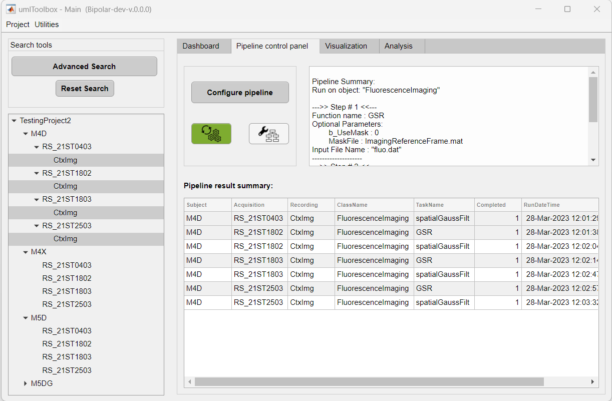

Main components of Pipeline Control tab.
This tab is dedicated to the creation and management of processing pipelines applied to a project's data.
For information on how to create and edit pipelines, refer to the Pipeline Configuration tool documentation.
Main components of Pipeline Control tab.
Here, one can create/edit an analysis pipeline and apply it to the selected objects.
This panel shows a summary of the pipeline steps and its parameters as well as the start and end timestamps of pipeline execution.
Example of information displayed in the Status panel tab before pipeline execution.
Once the pipeline execution is completed, a table is displayed with a summary of the steps performed in each object. Here, eventual errors are flagged and error messages are displayed.

Example of summary table after a pipeline execution.